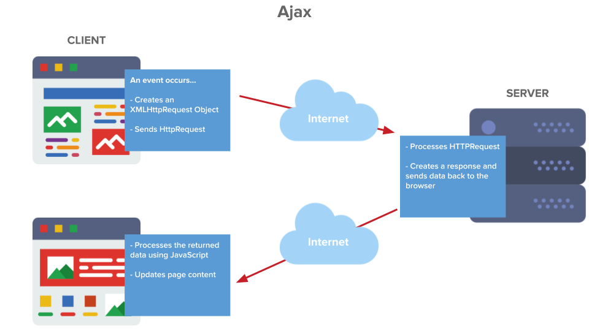
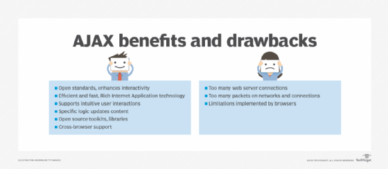

Ajax (also AJAX ; short for "asynchronous JavaScript and XML") is a set of web development techniques that uses various web technologies on the client-side to create asynchronous web applications. With Ajax, web applications can send and retrieve data from a server asynchronously (in the background) without interfering with the display and behaviour of the existing page. By decoupling the data interchange layer from the presentation layer, Ajax allows web pages and, by extension, web applications, to change content dynamically without the need to reload the entire page. In practice, modern implementations commonly utilize JSON instead of XML. Ajax is not a technology, but rather a programming concept. HTML and CSS can be used in combination to mark up and style information. The webpage can be modified by JavaScript to dynamically display—and allow the user to interact with the new information. The built-in XMLHttpRequest object is used to execute Ajax on webpages, allowing websites to load content onto the screen without refreshing the page. Ajax is not a new technology, nor is it a new language. Instead, it is existing technologies used in a new way.
.png)
In the early-to-mid 1990s, most Websites were based on complete HTML pages. Each user action required a complete new page to be loaded from the server. This process was inefficient, as reflected by the user experience: all page content disappeared, then the new page appeared. Each time the browser reloaded a page because of a partial change, all the content had to be re-sent, even though only some of the information had changed. This placed additional load on the server and made bandwidth a limiting factor in performance. In 1996, the iframe tag was introduced by Internet Explorer; like the object element,[citation needed] it can load a part of the web page asynchronously. In 1998, the Microsoft Outlook Web Access team developed the concept behind the XMLHttpRequest scripting object. It appeared as XMLHTTP in the second version of the MSXML library, which shipped with Internet Explorer 5.0 in March 1999. The functionality of the Windows XMLHTTP ActiveX control in IE 5 was later implemented by Mozilla Firefox, Safari, Opera, Google Chrome, and other browsers as the XMLHttpRequest JavaScript object. Microsoft adopted the native XMLHttpRequest model as of Internet Explorer 7. The ActiveX version is still supported in Internet Explorer, but not in Microsoft Edge. The utility of these background HTTP requests and asynchronous Web technologies remained fairly obscure until it started appearing in large scale online applications such as Outlook Web Access (2000) and Oddpost (2002). Google made a wide deployment of standards-compliant, cross browser Ajax with Gmail (2004) and Google Maps (2005). In October 2004 Kayak.com's public beta release was among the first large-scale e-commerce uses of what their developers at that time called "the xml http thing". This increased interest in Ajax among web program developers. The term AJAX was publicly used on 18 February 2005 by Jesse James Garrett in an article titled Ajax: A New Approach to Web Applications, based on techniques used on Google pages. On 5 April 2006, the World Wide Web Consortium (W3C) released the first draft specification for the XMLHttpRequest object in an attempt to create an official Web standard. The latest draft of the XMLHttpRequest object was published on 6 October 2016, and the XMLHttpRequest specification is now a living standard.
The term Ajax has come to represent a broad group of Web technologies that can be used to implement a Web application that communicates with a server in the background, without interfering with the current state of the page. In the article that coined the term Ajax, Jesse James Garrett explained that the following technologies are incorporated:
Ajax offers several benefits that can significantly enhance web application performance and user experience. By reducing server traffic and improving speed, Ajax plays a crucial role in modern web development. One key advantage of Ajax is its capacity to render web applications without requiring data retrieval, resulting in reduced server traffic. This optimization minimizes response times on both the server and client sides, eliminating the need for users to endure loading screens. Furthermore, Ajax facilitates asynchronous processing by simplifying the utilization of XmlHttpRequest, which enables efficient handling of requests for asynchronous data retrieval. Additionally, the dynamic loading of content enhances the application's performance significantly. Besides, Ajax enjoys broad support across all major web browsers, including Microsoft Internet Explorer versions 5 and above, Mozilla Firefox versions 1.0 and beyond, Opera versions 7.6 and above, and Apple Safari versions 1.2 and higher.
